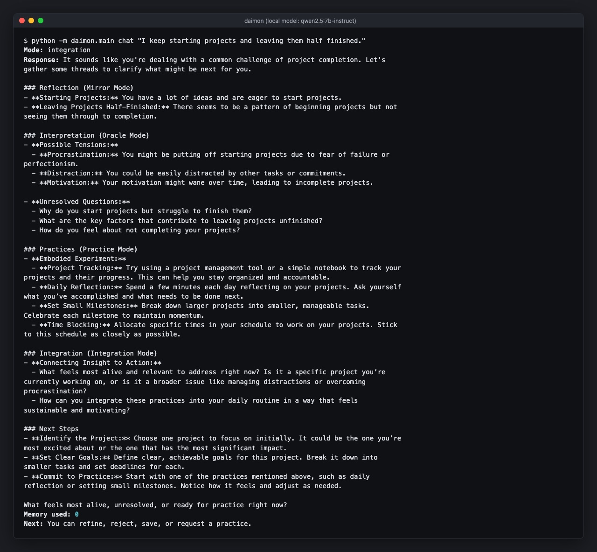

Daimon
Daimon is a reflective companion modeled in the language of Hermetic, Platonic and related esoteric traditions, implemented with rigorous modern software engineering. It is not a guru, a source of metaphysical certainty, or a substitute for your own judgment: it is a structured system for reflection, symbolic interpretation, practice design and observing yourself over time.

Four modes
Each conversation is routed to one of four modes: mirror, oracle, practice or integration.
- Mirror restates the patterns, contradictions and latent structure in what you said.
- Oracle offers symbolic readings, hypotheses and prompts, and always frames them as interpretation, never as absolute.
- Practice suggests exercises, rituals, journaling prompts, somatic practices, reading paths and experiments.
- Integration is one step in the cycle the companion works in: signal, reflection, interpretation, practice, observation, integration, revision.
Every message passes a safety check before it is routed, and the companion retrieves relevant memory before it answers.
The old words, translated
Each esoteric concept is meant to map to an explicit technical structure where possible. Ascent means increased reflective integration; purification means less noise, compulsion and contradiction; recollection means recovering forgotten commitments or deep patterns; fate means conditioning, history and pattern; will means disciplined alignment between value and action. Awakening is defined the same way, as more reflective integration, ethical consistency, steady attention, and alignment between insight and action, with no supernatural claim.
Memory you can audit
What it remembers is meant to be minimal, inspectable, editable, attributable and revocable. Durable memory is explicit, typed and reviewable, and a weak inference is never quietly turned into a durable truth. You can also write a memory yourself with daimon remember.
Its own practice
Between conversations the companion keeps a practice of its own. It runs practice cycles and looser, associative dream cycles, and writes typed journal entries (practice, dream, thought, gift, symbol, question) with a mood and symbols. Its library starts with seven practices: Aleph Contemplation, Vesica Piscis Meditation, Memory Synthesis, I Ching Hexagram Contemplation, Pattern Field Survey, Inner Temple Construction and Coherence Reflection. A gift command distills the seeds gathered in dreams into one offering: a new practice, a contemplation seed or an open question. One such gift, The Breath-Gap: Naming Suspended, asks you to hold a caught breath for one inhalation without naming it.
What it will not do
It is built to refuse dependency, isolation from the people around you, claims of privileged access to hidden truth, readings presented as unquestionable, and ambiguity collapsed into certainty. Its voice is meant to be lucid, calm, non-flattering and precise about uncertainty.
mirror, oracle, practice, integration
the terminal, a browser page and a desktop window